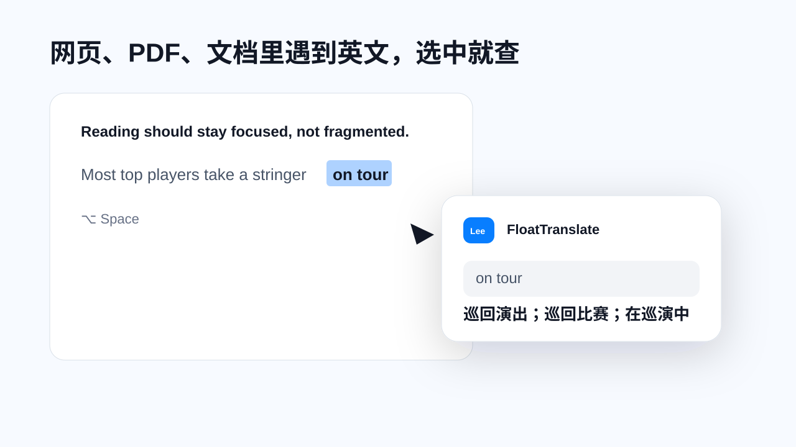
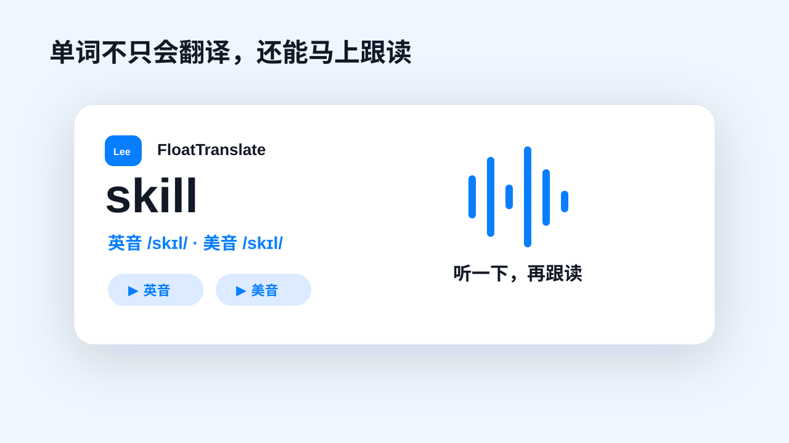
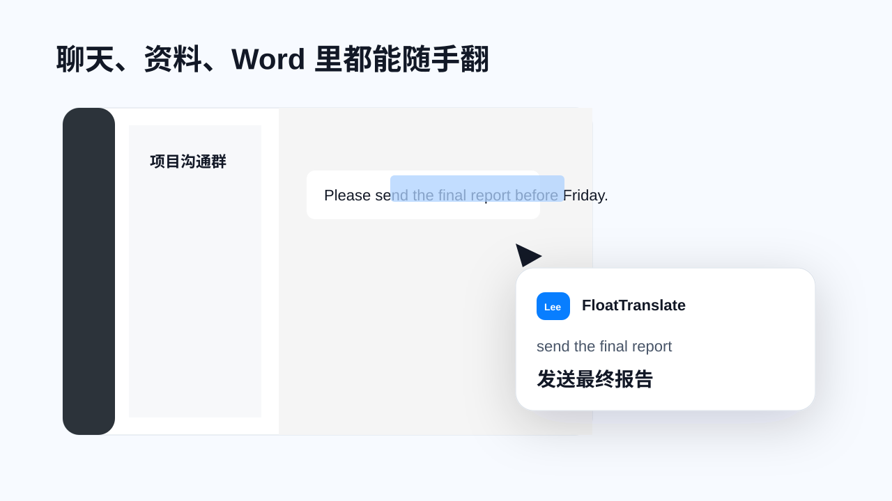

网页、PDF、文档
选中单词、短语或句子，翻译面板贴着原文出现，阅读思路不断。
在 Word、PDF、网页和聊天软件中选中文字，按下快捷键，翻译、词典解释和英美发音就在当前内容旁边出现。
Reading should stay focused, not fragmented.
英音 /ˈriːdɪŋ/ · 美音 /ˈriːdɪŋ/阅读应该保持专注，而不是被频繁打断。
传统翻译需要复制、切窗口、粘贴、等待、再切回来。FloatTranslate 把这条路径压缩成一次选中和一次快捷键，让英文资料在哪里，翻译就出现在哪里。

选中单词、短语或句子，翻译面板贴着原文出现，阅读思路不断。

查看音标，并分别播放英音和美音。普通扬声器按默认口音朗读。

微信、邮件、Word、PPT 中遇到英文，不需要复制到网页翻译。
面向 macOS 原生使用场景，后台运行，按快捷键唤起浮动面板。
支持英文单词、短语、句子，以及中文表达转英文参考。
展示词性、中文释义、例句和音标，避免只给一个模糊答案。
音标旁提供英音、美音播放按钮，也可设置默认朗读口音。
当前版本适合小范围测试。后续可以补正式签名、公证、Release 下载、常见问题和权限说明。